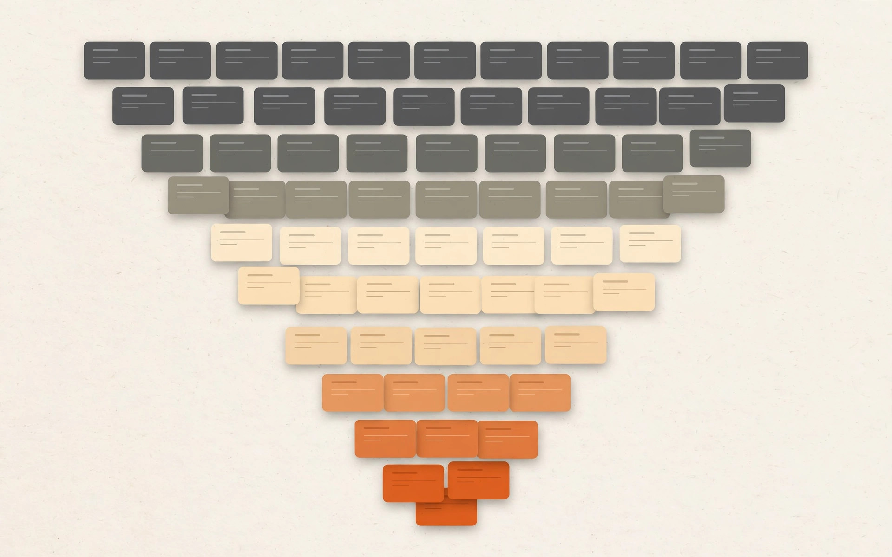

Job Hunt
A personal dashboard I built to keep my job search organized. It turns a feed of about 19,000 postings into the 543 roles that actually fit, and keeps a record of every application I submit.

Why
The new-grad job feeds I used had about 19,000 postings and no good way to see what was new, what closed, or what actually fit me. I was opening the same roles twice, missing the ones that closed overnight, and losing track of which applications I had already sent. A spreadsheet could not keep up, because the feed changes every day. I needed a system that watched the feed for me, remembered what I had seen, and told me what was new.
What I built
- A pipeline in Python, FastAPI and SQLite that pulls in the 19,000-posting feed, filters it down to the 543 roles that fit, and tracks when each one opens and closes.
- Scoring that reads titles only, on purpose. It is fast, it is honest about what it can see, and it never pretends to have read a posting it has not opened.
- A React dashboard for going through them, saving them and tracking applications. Each role carries its status, so saved, applied, closed and rejected stay separate.
- A submissions record, so I never apply to the same role twice. The dashboard is the single record of what I have sent, and it stays in sync with the confirmation emails.
What was hard
The feed is the problem, not the dashboard. The same role appears under three titles at three companies, or the same title at one company in five cities, and a naive count calls all of them new. Deduplication had to be careful enough to merge the copies without merging two different roles. Title-only scoring has a ceiling too: a title can hide a role that needs five years of experience, or bury a new-grad role under a senior-sounding name, and no score fixes that without reading the posting. Postings close without notice, so a role that fit yesterday can be gone this morning, and the system has to say so instead of leaving it on the list. The lesson was to make the limits visible. A filter that admits what it cannot see is more useful than one that pretends.
Where it's at
I use it every day to keep track of my own search. It is the least polished project on this page and the one I depend on most, which is probably the right order. When the search ends, the dashboard stays as the record of how it went.
Want the full story?